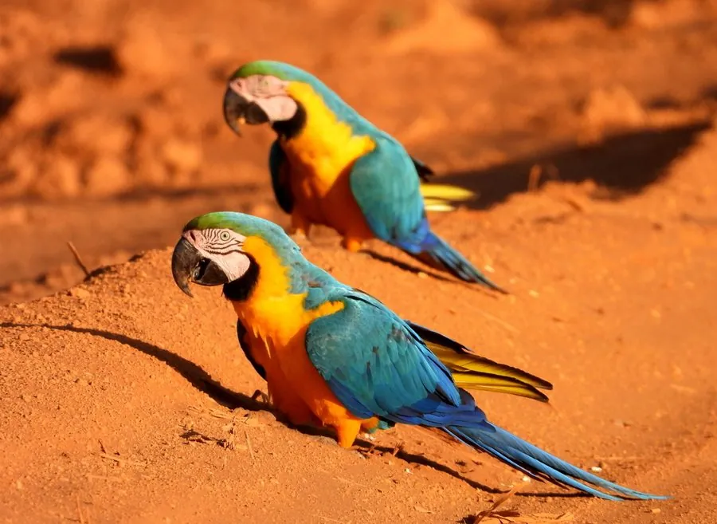

鸟类 · 动物界
蓝黄金刚鹦鹉 Ara ararauna

南美雨林中羽色蓝黄分明的巨型鹦鹉，翅膀湛蓝、胸腹金黄，常成对飞过雨林上空并发出响亮的鸣叫声。
- 分类
- 门脊索动物门纲鸟纲目鹦形目科鹦鹉科属金刚鹦鹉属
- 栖息环境
- 低地热带雨林、河岸林和棕榈林，在高大乔木的树洞中营巢
- 地理分布
- 南美洲，从巴拿马、巴西到玻利维亚、巴拉圭和阿根廷北部
- 保护级别
- IUCN 无危（LC）；CITES 附录Ⅱ物种，中国无野生分布
物种志
蓝黄金刚鹦鹉体长 86–93 cm，体重 0.9–1.5 kg，翼展 105–120 cm。它的羽色对比强烈：背部和翅膀背面为深蓝色，胸腹部为金黄色，额头绿色，喙黑色而巨大，脸部裸露的皮肤白色并带黑色细纹，眼睛黄色。它的尾巴很长，飞行时像一条蓝色飘带。
蓝黄金刚鹦鹉分布于南美洲的巴拿马、巴西、玻利维亚、巴拉圭和阿根廷北部，栖息在低地热带雨林、河岸林和棕榈林。它们以果实、种子和坚果为食，喜欢在高大乔木的树冠层活动，常成对或家族群飞行，叫声响亮可传出很远。繁殖期在树洞中产卵，每窝 2–3 枚，孵化约 28 天，育雏期约 3 个月。由于盗猎和栖息地破坏，部分地区的种群明显下降，目前全球被列为无危物种，但国际贸易受到公约管制。
形态与习性
- 食性果实、种子和坚果
- 体长86–93 cm
- 体重0.9–1.5 kg
- 翼展105–120 cm
- 繁殖每窝 2–3 枚卵，孵化约 28 天
- 寿命野外约 30–40 年
- 羽色背部深蓝、胸腹金黄，对比强烈
趣味知识
- 蓝黄金刚鹦鹉的羽色蓝黄分明，是南美雨林中最容易辨认的鹦鹉之一。
- 它们会成群到河岸黏土崖上啃土，补充矿物质。
- 金刚鹦鹉的喙力极强，能咬开坚硬的棕榈果壳。
- 蓝黄金刚鹦鹉终生配对，常成对飞过雨林上空。